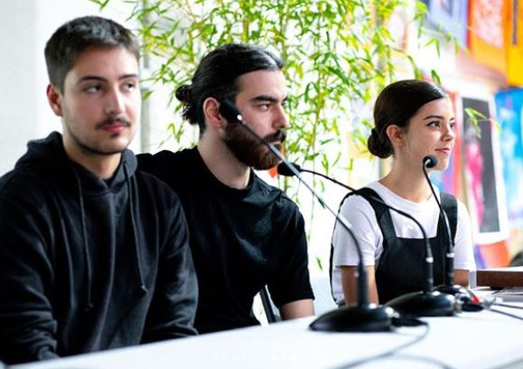

Inês Pinheiro, designer de comunicação sediada em Lisboa.
Licenciada em Design de Comunicação na Faculdade de Belas-Artes da Universidade de Lisboa. Prática de trabalho multidisciplinar, com uma abordagem crítica e especulativa.
/ENG/
Inês Pinheiro, communication designer based in Lisbon.
Communication Design graduate from the Faculty of Fine Arts of Lisbon. Multidisciplinary practice, with a critical and speculative approach.
/Contact/ E-mailLinkedinInstagram
Blaze Type 